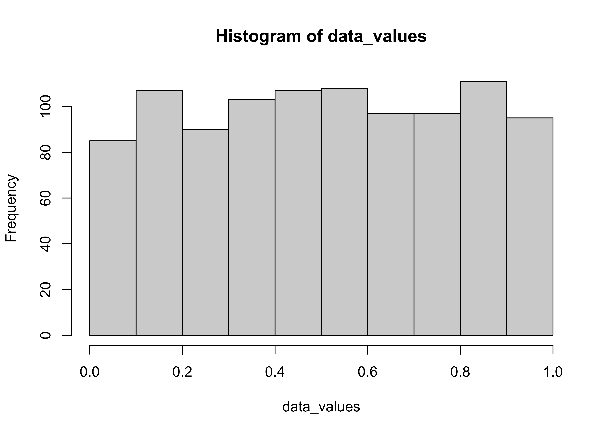
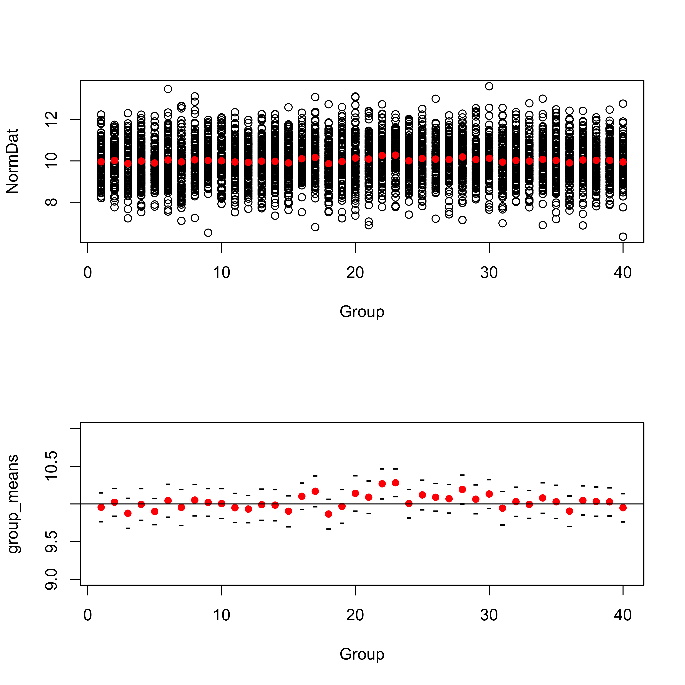

Statistical inference
NOTE: This page has been revised for Spring 2020, but may undergo further edits.
1 Introduction
The general idea that underlies statistical inference is the comparison of particular statistics from on observational data set (i.e. the mean, the standard deviation, the differences among the means of subsets of the data), with an appropriate reference distribution in order to judge the significance of those statistics. When various assumptions are met, and specific hypotheses about the values of those statistics that should arise in practice have been specified, then statistical inference can be a powerful approach for drawing scientific conclusions that efficiently uses existing data or those collected for the specific purpose of testing those hypotheses. Even in a context when a formal experimental design is not possible, or when the objective is to explore the data, significance evaluation can be useful.
As a consequence of the central limit theorem, we know that the mean is normally distributed, and so we can use the normal distribution to describe the uncertainty of a sample mean.
2 Characterization of samples
Once a sample has been obtained, and descriptive statistics calculated, attention may then turn to the significance (representativeness as opposed to unusualness) of the sample or of the statistics. This information may be gained by comparing the specific value of a statistic with an appropriate reference distribution, and by the calculation of additional statistics that describe the level of uncertainty a particular statistic may have.
In the case of the sample mean, the appropriate reference distribution is the normal distribution, which is implied by the Central Limit Theorem.
2.1 Standard error of the mean and confidence interval for the mean
Uncertainty in the mean can be described by the standard error of the mean or by the confidence interval for the mean. The standard error of the mean can be thought of as the standard deviation of a set mean values from repeated samples.
Definition of the standard error of the mean
Here is a demonstration using simulated data and repeated samples of different sizes
# generate 1000 random numbers from the normal distribution
npts <- 1000
demo.mean <- 5; demo.sd <- 2
data.values <- rnorm(npts, demo.mean, demo.sd)
hist(data.values); mean(data.values); sd(data.values)
## [1] 4.906464## [1] 2.004611Set the number of replications nreps and the (maximum) sample size
nreps <- 1000 # number of replications (samples) for each sample size
max.sample.size <- 100 # number of example sample sizesCreate several matrices to hold the individual replication results.
# matrix to hold means of each of the nreps samples
mean.samp <- matrix(1:nreps)
# matrices to hold means, sd’s and sample sizes for for each n
average.means <- matrix(1:(max.sample.size-1))
sd.means <- matrix(1:(max.sample.size-1))
sample.size <- matrix(1:(max.sample.size-1))Generate means for a range of sample sizes (1:max.sample.size)
for (n in seq(1,max.sample.size-1)) {
# for each sample size generate nreps samples and get their mean
for (i in seq(1,nreps)) {
samp <- sample(data.values, n+1, replace=T)
mean.samp[i] <- mean(samp)
}
# get the average and standard deviation of the nreps means
average.means[n] <- apply(mean.samp,2,mean)
sd.means[n] <- apply(mean.samp,2,sd)
sample.size[n] <- n+1
}Take a look at the means and the standard errors. Note that means remain essentially constant across the range of sample sizes, while the standard errors decrease rapidly (at first) with increasing sample size.

## [,1] [,2] [,3]
## [1,] 4.882980 1.3868462 2
## [2,] 4.895045 1.1498649 3
## [3,] 4.922299 0.9979406 4
## [4,] 4.882664 0.9078207 5
## [5,] 4.935052 0.8436834 6
## [6,] 4.941734 0.7536554 7## [,1] [,2] [,3]
## [94,] 4.917387 0.2086091 95
## [95,] 4.904899 0.1978738 96
## [96,] 4.917019 0.1989712 97
## [97,] 4.891055 0.2070056 98
## [98,] 4.897282 0.2031153 99
## [99,] 4.903792 0.1940056 100Verify that the standard error of the mean is sigma/sqrt(n)
Generate some data values, this time from a uniform distribution
# data.values from a uniform distribution
data.values <- runif(npts, 0, 1)
hist(data.values); mean(data.values); sd(data.values)
## [1] 0.4829327## [1] 0.2918684Rescale these values so that they have the same mean (demo.mean) and standard deviation (demo.sd) as in the previous example,
# rescale the data.values so they have a mean of demo.mean
# and a standard deviation of demo.sd (standardize, then rescale)
data.values <- (data.values-mean(data.values))/sd(data.values)
mean(data.values); sd(data.values)## [1] 6.328004e-17## [1] 1data.values <- (data.values*demo.sd)+demo.mean
hist(data.values); mean(data.values); sd(data.values)
## [1] 5## [1] 2Repeat the demonstration
for (n in seq(1,max.sample.size-1)) {
# for each sample size generate nreps samples and get their mean
for (i in seq(1,nreps)) {
samp <- sample(data.values, n+1, replace=T)
mean.samp[i] <- mean(samp)
}
# get the average and standard deviation of the nreps means
average.means[n] <- apply(mean.samp,2,mean)
sd.means[n] <- apply(mean.samp,2,sd)
sample.size[n] <- n+1
}
plot(sample.size, sd.means, pch=16)
## [,1] [,2] [,3]
## [1,] 5.076491 1.4218943 2
## [2,] 4.973896 1.1748208 3
## [3,] 5.006157 1.0423164 4
## [4,] 5.018091 0.9066874 5
## [5,] 5.037439 0.8329974 6
## [6,] 4.947910 0.7866689 7## [,1] [,2] [,3]
## [94,] 4.993303 0.2052575 95
## [95,] 4.999219 0.2107304 96
## [96,] 4.996054 0.2042940 97
## [97,] 5.005953 0.2024509 98
## [98,] 5.007782 0.1981763 99
## [99,] 5.007413 0.2003017 100This demonstrates that the standard error of the mean is insensitive to the underlying distribution of the data.
2.2 Confidence intervals
The confidence interval provides a verbal or graphical characterization, based on the information in a sample, of the likely range of values within which the “true” or population mean lies. This example uses an artificial data set [cidat.csv]
cidat is a data frame that can be generated as follows
# generate 4000 random values from the Normal Distribution with mean=10, and standard deviation=1
NormDat <- rnorm(mean=10, sd=1, n=4000)
# generate a "grouping variable" that defines 40 groups, each with 100 observations
Group <- sort(rep(1:40,100))
cidat <- data.frame(cbind(NormDat, Group)) # make a data frameAttach and summarize the data set.
## NormDat Group
## Min. : 5.730 Min. : 1.00
## 1st Qu.: 9.323 1st Qu.:10.75
## Median : 9.985 Median :20.50
## Mean : 9.991 Mean :20.50
## 3rd Qu.:10.678 3rd Qu.:30.25
## Max. :13.826 Max. :40.00The idea here is to imagine that each group of 100 observations represents one possible sample of some underlying process or information set, that might occur in practice. These hypothetical samples (which are each equally likely) provide a mechanism for illustrating the range of values of the mean that could occur simply due to natural variability of the data, and the “confidence interal” is that range of values of the mean that enclose 90% of the possible mean values.
Get the means and standard errors of each group.
group.means <- tapply(NormDat, Group, mean)
group.sd <- tapply(NormDat, Group, sd)
group.npts <- tapply(NormDat, Group, length)
group.semean <- (group.sd/(sqrt(group.npts)))
mean(group.means)## [1] 9.991148## [1] 0.08264523Plot the individual samples (top plot) and then the means, and their standard errors (bottom plot). Note the different scales on the plots.
# plot means and data
par(mfrow=c(2,1))
plot(Group, NormDat)
points(group.means, col="red", pch=16)
# plot means and standard errors of means
plot(group.means, ylim=c(9, 11), col="red", pch=16, xlab="Group")
points(group.means + 2.0*group.semean , pch="-")
points(group.means - 2.0*group.semean , pch="-")
abline(10,0)
The bottom plot shows that out the 40 mean values (red dots), 2 (0.05 or 5 percent) have intervals (defined to be twice the standard error either side of the mean, black tick marks) that do not enclose the “true” value of the mean (10.0).
Set the graphics window back to normal and detach cidat.
3 Simple inferences based on the standard error of the mean
The standard error of the mean, along with the knowledge that the sample mean is normally distributed allows inferences about the mean to made For example, questions of the following kind can be answered:
- What is the probability of occurrence of an observation with a particular value?
- What is the probability of occurrence of a sample mean with a particular value?
- What is the “confidence interval” for a sample mean with a particular value?
Here’s a short discussion of simple inferential statistics:
#Hypothesis tests#
The next step toward statistical inference is the more formal development and testing of specific hypotheses (as opposed to the rather informal inspection of descriptive plots, confidence intervals, etc.)
“Hypothesis” is a word used in several contexts in data analysis or statistics:
- the research hypothesis is the general scientific issue that is being explored by a data analysis. It may take the form of quite specific statements, or just general speculations.
- the null hypothesis (Ho) is a specific statement whose truthfulness can be evaluated by a particular statistical test. An example of a null hypothesis is that the means of two groups of observations are identical.
- the alternative hypothesis (Ha) is, as its name suggests an alternative statement of what situation is true, in the event that the null hypothesis is rejected. An example of an alternative hypothesis to a null hypothesis that the means of two groups of observations are identical is that the means are not identical.
A null hypothesis is never “proven” by a statistical test. Tests may only reject, or fail to reject, a null hypothesis.
There are two general approaches toward setting up and testing specific hypotheses: the “classical approach” and the “p-value” approach.
The steps in the classical approach:
- define or state the null and alternative hypotheses.
- select a test statistic.
- select a significance level, or a specific probability level, which if exceeded, signals that the test statistic is large enough to consider significant.
- delineate the “rejection region” under the pdf of the appropriate distribution for the test statistic, (i.e. determine the specific value of the test statistic that if exceeded would be grounds to consider it significant.
- compute the test statistic.
- depending on the particular value of the test statistics either a) reject the null hypothesis (Ho) and accept the alternative hypothesis (Ha), or b) fail to reject the null hypothesis.
The steps in the “p-value” approach are:
- define or state the null and alternative hypotheses.
- select and compute the test statistic.
- refer the test statistic to its appropriate reference distribution.
- calculate the probability that a value of the test statistic as large as that observed would occur by chance if the null hypothesis were true (this probability, or p-value, is called the significance level).
- if the significance level is small, the tested hypothesis (Ho) is discredited, and we assert that a “significant result” or “significant difference” has been observed.
4 The t-test
An illustration of an hypothesis test that is frequently used in practice is provided by the t-test, one of several “difference-of-means” tests. The t-test (or more particularly Student’s t-test (after the pseudonym of its author, W.S. Gosset) provides a mechanism for the simple task of testing whether there is a significant difference between two groups of observations, as reflected by differences in the means of the two groups. In the t-test, two sample mean values, or a sample mean and a theoretical mean value, are compared as follows:
- the null hypthesis is that the two mean values are equal, while the
- alternative hypothesis is that the means are not equal (or that one is greater than or less than the other)
- the test statistic is the t-statistic
- the significance level or p-value is determined using the t-distribution
The shape of the t distribution can be visualized as follows (for df=30):

You can read about the origin of Gosset’s pseudonum (and his contributions to brewing) here.
4.1 The t-test for assessing differences in group means
There are two ways the t-test is implemented in practice, depending on the nature of the question being asked and hence on the nature of the null hypotheis:
- one-sample t-test (for testing the hypothesis that a sample mean is equal to a “known” or “theoretical” value), or the
- two-sample t-test (for testing the hypothesis that the means of two groups of observations are identical).
Example data sets:
Attach the example data, and get a boxplot of the data by group:

Two-tailed t-test (are the means different in a general way?)
##
## Welch Two Sample t-test
##
## data: Set1 by Group1
## t = -0.2071, df = 55.818, p-value = 0.8367
## alternative hypothesis: true difference in means is not equal to 0
## 95 percent confidence interval:
## -0.11841233 0.09622446
## sample estimates:
## mean in group 0 mean in group 1
## 7.988305 7.999399The t-statistic is -0.2071 and the p-value = 0.8367, which indicates that the t-statistic is not significant, i.e. that there is little support for rejecting the null hypothesis that there is no difference between the mean of group 0 and the mean of group 1.
Two one-tailed t-tests (each evaluates whether the means are different in a specific way?)
##
## Welch Two Sample t-test
##
## data: Set1 by Group1
## t = -0.2071, df = 55.818, p-value = 0.4183
## alternative hypothesis: true difference in means is less than 0
## 95 percent confidence interval:
## -Inf 0.07850556
## sample estimates:
## mean in group 0 mean in group 1
## 7.988305 7.999399##
## Welch Two Sample t-test
##
## data: Set1 by Group1
## t = -0.2071, df = 55.818, p-value = 0.5817
## alternative hypothesis: true difference in means is greater than 0
## 95 percent confidence interval:
## -0.1006934 Inf
## sample estimates:
## mean in group 0 mean in group 1
## 7.988305 7.999399Notice that for each example, the statistics (t-statistic, means of each group), are identical, while the p-values, and confidence intervals for the t-statistic differ). The smallest p-value is obtained for the test of the hypothes that the mean of group 0 is less than the mean of group 1 (which is the observed difference). But, that difference is not significant (the p-value is greater than 0.05).
A a second example

##
## Welch Two Sample t-test
##
## data: Set2 by Group2
## t = 6.9733, df = 57.372, p-value = 3.419e-09
## alternative hypothesis: true difference in means is not equal to 0
## 95 percent confidence interval:
## 0.2772856 0.5006463
## sample estimates:
## mean in group 0 mean in group 1
## 7.988305 7.599339Here the t-statistic is relatively large and the p-value very small, lending support for rejecting the null hypothesis of no significant difference in the means (and accepting the alternative hypothesis that the means do differ). Remember, we haven’t “proven” that they differ, we’ve only rejected the idea that they are identical.
4.2 Differences in group variances
One assumption that underlies the t-test is that the variances (or dispersions) of the two samples are equal. A modification of the basic test allows cases when the variances are approximately equal to be handled, but large differences in variability between the two groups can have an impact on the interpretability of the test results:
Example data: [foursamples.csv]
t-tests among groups with different variances
attach(foursamples)
# nice histograms
cutpts <- seq(0.0, 20.0, by=1)
par(mfrow=c(2,2))
hist(Sample1, breaks=cutpts, xlim=c(0,20))
hist(Sample2, breaks=cutpts, xlim=c(0,20))
hist(Sample3, breaks=cutpts, xlim=c(0,20))
hist(Sample4, breaks=cutpts, xlim=c(0,20))

## [1] -0.2718703##
## Welch Two Sample t-test
##
## data: Sample1 and Sample2
## t = -1.7294, df = 997.9, p-value = 0.08404
## alternative hypothesis: true difference in means is not equal to 0
## 95 percent confidence interval:
## -0.58035326 0.03661273
## sample estimates:
## mean of x mean of y
## 10.72631 10.99818## [1] -0.2676365##
## Welch Two Sample t-test
##
## data: Sample3 and Sample4
## t = -4.2308, df = 998, p-value = 2.543e-05
## alternative hypothesis: true difference in means is not equal to 0
## 95 percent confidence interval:
## -0.3917738 -0.1434991
## sample estimates:
## mean of x mean of y
## 10.73264 11.00027## [1] -0.006325667##
## Welch Two Sample t-test
##
## data: Sample1 and Sample3
## t = -0.053011, df = 658.3, p-value = 0.9577
## alternative hypothesis: true difference in means is not equal to 0
## 95 percent confidence interval:
## -0.2406330 0.2279816
## sample estimates:
## mean of x mean of y
## 10.72631 10.73264## [1] -0.002091883##
## Welch Two Sample t-test
##
## data: Sample2 and Sample4
## t = -0.017387, df = 654.69, p-value = 0.9861
## alternative hypothesis: true difference in means is not equal to 0
## 95 percent confidence interval:
## -0.2383369 0.2341532
## sample estimates:
## mean of x mean of y
## 10.99818 11.00027There is a formal test for equality of group variances that will be described with analysis of variance.
5 Readings
- Owen (The R Guide): section 7.1